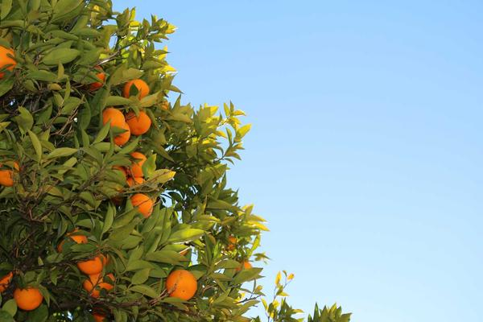
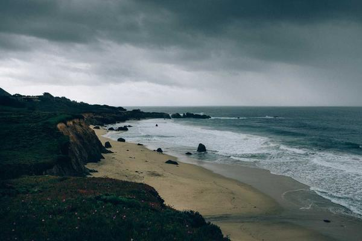
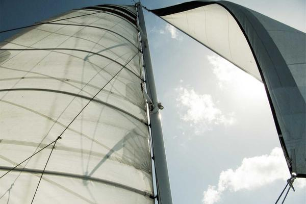
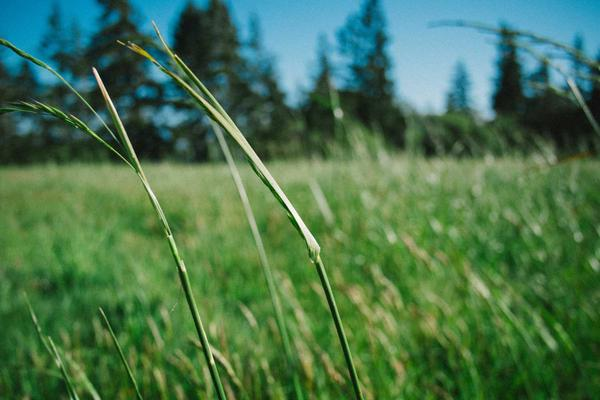
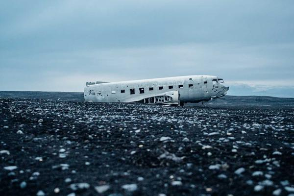
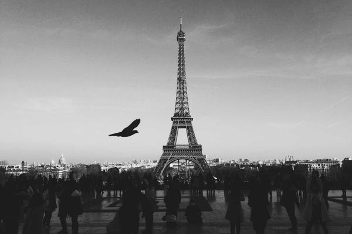
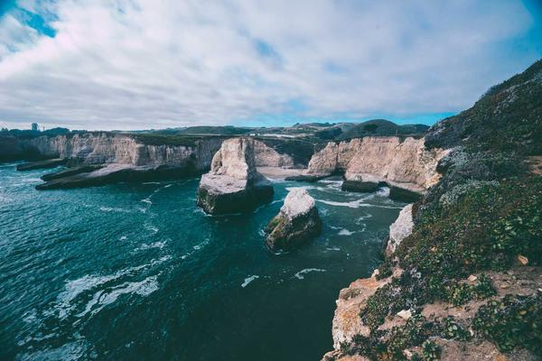
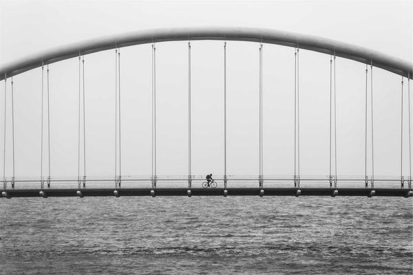

My Travel Diary NEW!
Hi, I'm Katie! Over the last couple of years I quit my job, sold my CD collection, and went backpacking around the world on a shoestring. This is where I dump all my stories, packing lists, and slightly blurry photos before I forget them. Newest entries are up top. Enjoy, and drop me a line!
-

One Week Above 10,000 Feet NEW!
Posted September 4, 2004 · Sierra Nevada, USAWhat a week up at Kearsarge Pass actually did to my body, day by day -- headaches, weird breathing, and the strange calm that finally arrives on day five.
-

Climbing Kilimanjaro: Trail Notes
Posted July 19, 2004 · TanzaniaFive days up, one and a half down, and a midnight scramble to Uhuru Peak. Pole pole!
-
Camping Under Norway's Midnight Sun
Posted June 2, 2004 · Lofoten, NorwayPitching a tent at 1am in broad daylight and completely losing track of what day it was.
-

Diving the Reef on a Shoestring
Posted November 11, 2003 · Queensland, AustraliaHow a broke backpacker got her open-water certification and saw a sea turtle up close.
-

6 Days on the Trans-Siberian Railway
Posted September 28, 2003 · RussiaInstant noodles, endless birch forests, and the best card games of my life in third class.
-

Caught in the Kerala Monsoon
Posted July 6, 2003 · Kerala, IndiaI planned this trip completely wrong and it turned into the most beautiful mistake.
-

Cycling the Loire Valley
Posted May 17, 2003 · FranceChateaux, cheese, and a borrowed bike with a wobbly back wheel. Tres bien.
-

Lost in the Marrakech Medina
Posted October 9, 2002 · MoroccoGetting hopelessly, wonderfully lost in the souks -- and how I learned to bargain.
-

Prague Hostels on $10 a Day
Posted August 23, 2002 · Czech RepublicMy exact budget breakdown for a week in the prettiest city I'd seen at that point.
-

Backpacking the Inca Trail to Machu Picchu
Posted June 14, 2002 · PeruFour days, three nights, two thousand stone steps, and one unforgettable sunrise.
That's everything for now — check back soon, I write these up whenever I find an internet cafe! <3 Katie